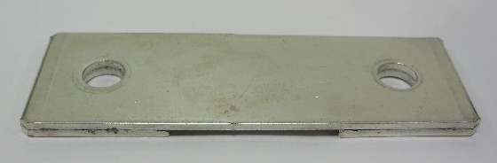
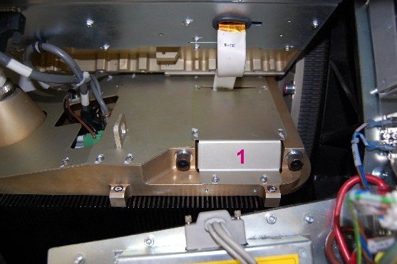
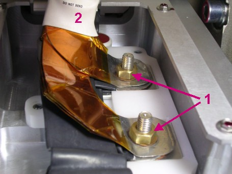
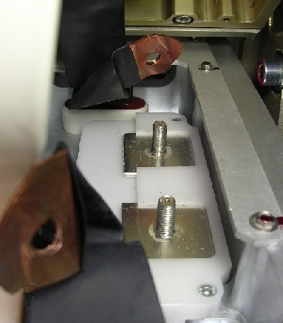
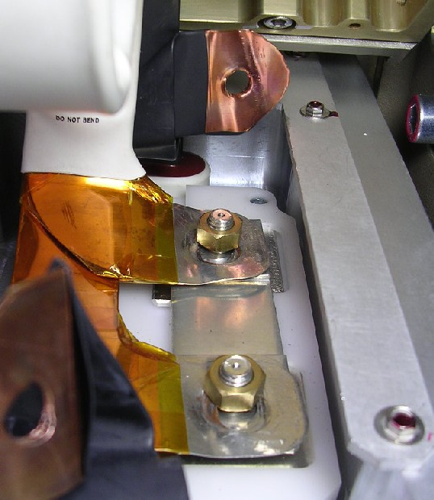

Operating Documentation
Direction 5193574-800, Rev# 22
LightSpeed 7.X Service Methods
Module Version 3.0, Version Date 9/17/09
Operating Documentation |
| Required Persons | Preliminary Reqs | Procedure | Finalization |
|---|---|---|---|
| 1 | Not Applicable | 30 mins | Included |
The objective of this procedure is to verify that the HV power inverter is working properly. No X-rays are generated during this test. A summary of the procedure follows:
Short Inverter HV output
Run Diagnostic
Reconnect HV Tank
| Last Revised: | August 3, 2009 |
| Item | Qty | Effectivity | Part# | Manufacturer | |
|---|---|---|---|---|---|
| Inverter Short
Circuit Test Tool (Illustration 1) Illustration 1: Inverter Short Circuit Test Tool  | 1 | - | Shipped with system | - | |
| Condition | Reference | Effectivity |
|---|---|---|
Run the Shorted Inverter Test diagnostic after the Inverter Gate Command Test passes. | - | - |
| ||||
| POTENTIAL FOR SHOCK. | ||||
| Voltage may be present. | ||||
| Use proper lockout/tagout procedures before replacing components. |
Remove the gantry right side cover.
Turn OFF the [HVDC ENABLE], [AXIAL DRIVE ENABLE], and [120 VAC] switches on the Service Switch panel.
Remove the cable cover from the HV tank shown as item 1 in Illustration 2.
Illustration 2: Tank Cable Cover

Remove the nuts holding the Inverter Output Cable to the HV tank and gently move the Inverter Output Cable out of the way. The nuts are shown as item 1 and the cable as item 2 in Illustration 3.
Illustration 3: Inverter Output Cable

Gently move the four HV Tank cables out of the way as shown in Illustration 4.
Illustration 4: HV Tank with Cables Removed

Place the Inverter Short Circuit Test Tool on the stand-offs and then cover it with the Inverter Output Cable. Bolt the tool and cable down as shown in Illustration 5.
Illustration 5: Shorted Inverter

Enable the 120 VAC and HVDC using the Service Switch panel, then press [ESTOP DRIVES RESET].
On the [DIAGNOSTIC] tab of the Common Service Desktop, select the [GENERATOR TOOL] and click on [KV DIAGNOSTICS] then click on [INVERTER SHORT CIRCUIT] . A screen displays instructions for running the test.
Click [CONFIRM] to run the diagnostic.
When the diagnostic is finished, disable the 120 VAC and HVDC using the Service Switch Panel.
Remove the short circuit test tool from the tank stand-offs.
Reattach the four tank cables and the Inverter Output cable to the tank stand-offs and bolt them down.
Replace the cable cover on the HV tank.
Turn ON the [HVDC ENABLE], [AXIAL DRIVE ENABLE], and [120 VAC] switches on the Service Switch panel.
Replace the gantry right side cover.
If this test fails, and the Inverter Gate Command Test passed, your system probably has an inverter problem.
If the test passes, the sequence normally dictates that you move on to the No Load kV test to try to isolate your problem.